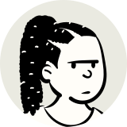

Voices · the roll call

Nusrat
Here.Anonymous by design. The name is a pseudonym and the drawing is not a likeness.
At a glance
- Nusrat was in school until recently and now spends most of her week at home, helping her family.
- The journey to school came to be seen as unsafe for a girl travelling by herself, and things changed at home as well.
- Before she stopped, she sat through lessons staring at the board; a teacher who repeated the question straight at her to snap her back only made it worse, more eyes on her.
- She wanted to ask for help, but there was no one at school whose job that felt like, so she told a cousin instead, who just said this happens to everyone and to wait it out.
- What actually helped was that cousin, someone who did not tell her to be grateful for what she had, and people from an outreach programme who talked to her family about her continuing, which opened a small door.
- Nobody told her she had a right to finish school; she only heard later, from the outreach programme, that some protection is supposed to exist.
In their words
I wanted to, but who. There wasn't a person at school whose job that felt like.
And I want people to know girls like me aren't choosing to disappear from school. It's decided around us.
What they want changed
She wants someone to talk to her family directly and early, before decisions get made without her in the room. What she wants readers to understand: girls like her are not choosing to disappear from school; it is decided around them.
If this is close to home: help lines
How this profile was made
Interviewed by Bella. Consent was given before the interview; the interviewee knows the profile is public and anonymous and may withdraw it until the content freeze. The avatar is drawn from a seed and was never chosen to resemble anyone.
What this page shows about them
- Age
- 15-17
- Region
- Southern Asia
- Schooling
- out of school
Age band, UN sub-region and schooling status only. A country appears here only with the interviewee's permission. No town, no school, no exact age, no date of birth.
- Approved by Bella
- Identifying details checked
- Safe messaging checked
See Methodology for how every profile is checked, and Correct this if something is wrong.